pkgs <- c("dplyr", "tidyr", "magrittr", "readr", "data.table", "here", "ggplot2", "gghalves", "ggthemes", "tidybayes", "patchwork", "datawizard", "flextable")
for(i in pkgs){
if(!i %in% rownames(installed.packages())){
install.packages(i)
library(i, character.only = TRUE)
}
else(library(i, character.only = TRUE))
}
annotate_npc <- function(label, x, y, ...)
{
ggplot2::annotation_custom(grid::textGrob(
x = unit(x, "npc"), y = unit(y, "npc"), label = label, gp = grid::gpar(fontsize = 20), ...))
}
raincloud_plot <- function(dataframe, variable)
{
plot_data = dataframe
plot_data %>%
ggplot() +
aes(
x = {{variable}}
) +
stat_slab(
side = "top",
fill = "#09A1D7"
) +
stat_dots(
side = "bottom",
dotsize = .9,
fill = "#09A1D7",
color = "#09A1D7"
) +
stat_pointinterval(
point_interval = mode_hdi
) +
theme_tidybayes()
}
ppt_m <- read_csv(here::here("data", "study_one", "ppt_manual.csv")) %>% as.data.table() %>%
mutate(time = factor(x = time, levels = c("pre", "post"), labels = c("Pre", "Post")))
landmark <- read_csv(here::here("data", "study_one", "landmark.csv")) %>% dplyr::filter(!ppid %in% c("d1-004", "d1-006")) %>%
dplyr::select(ppid, trial, time, forearmlength, lapse_fix_target, lapse_fix_error) %>%
mutate(error_std = standardize(lapse_fix_error),
target = factor(lapse_fix_target,
levels = c("Elbow", "Forearm", "Wrist")),
error_cm = lapse_fix_error * 100,
time = factor(time,
levels = c("pre", "post"),
labels= c("Pre", "Post"))) %>%
as.data.table()VR - Descriptive Analyses
Imports
Landmark Task
Empirical Distributions
Error
landmark_raincloud <- landmark %>%
ggplot() +
aes(
x = error_cm,
fill = target,
color = target
) +
stat_slab(
side = "top"
) +
stat_dots(
side = "bottom"
) +
facet_wrap(
~ target,
nrow = 3
) +
scale_color_manual(
values = c("Elbow" = "#E69F00", "Forearm" = "#56B4E9", "Wrist" = "#009E73")
) +
scale_fill_manual(
values = c("Elbow" = "#E69F00", "Forearm" = "#56B4E9", "Wrist" = "#009E73")
) +
stat_pointinterval(
point_interval = mode_hdi
) +
theme_tidybayes()Error by Time
lm_empirical <- landmark %>%
ggplot(aes(y = error_cm,
x = time,
fill = time,
color = time)) +
stat_pointinterval(data = landmark[time == "Post"],
point_interval = mean_qi,
show_slab = FALSE,
position = position_nudge(x = -.45)) +
stat_pointinterval(data = landmark[time == "Pre"],
point_interval = mean_qi,
show_slab = FALSE,
position = position_nudge(x = .45)) +
geom_half_point(data = landmark[time == "Post"],
side = "r",
range_scale = .5,
alpha = .6) +
geom_half_point(data = landmark[time == "Pre"],
side = "l",
range_scale = .5,
alpha = .6) +
stat_slab(data = landmark[time == "Post"],
alpha = .8,
scale = .4,
side = "left") +
stat_slab(data = landmark[time == "Pre"],
alpha = .8,
scale = .4,
side = "right") +
geom_hline(yintercept = 0, linetype = "longdash", color = "black", alpha = .8) +
facet_wrap(~target)+
theme_tidybayes() +
scale_x_discrete(limits = c("Pre", "Post"),
expand = c(0, 0),
labels = c("Pre", "Post"))+
scale_y_continuous(limits = c(-35, 35), expand = c(0, 0)) +
scale_fill_manual(breaks = c("Pre", "Post"),
values = c("#001015", "#09A1D7"),
labels = c("Pre", "Post")) +
scale_color_manual(breaks = c("Pre", "Post"),
values = c("#001015", "#09A1D7"),
labels = c("Pre", "Post")) +
labs(y = "Error (cm)", x = "Time", fill = "Time", color = "Time", title = "Body Landmark Task Response Distributions") +
theme(axis.text.y = element_text(hjust = 0),
title = element_text(size = 14),
text = element_text(size = 16, color = "black"),
strip.background = element_blank(),
strip.placement = "inside",
strip.switch.pad.wrap = unit(0, "in"),
panel.background = element_rect(fill = "transparent", colour = NA),
legend.background = element_rect(fill = "transparent", colour = NA),
plot.background = element_rect(fill = "transparent", colour = NA))
ggsave(lm_empirical, filename = here::here("scripts", "for_osf", "tooluse_in_VR", "figures", "landmark-empirical-plot.svg"), width = 15, height = 8)
saveRDS(lm_empirical, here::here("scripts", "for_osf", "tooluse_in_VR", "figures", "landmark-empirical-plot.rds"))
lm_empirical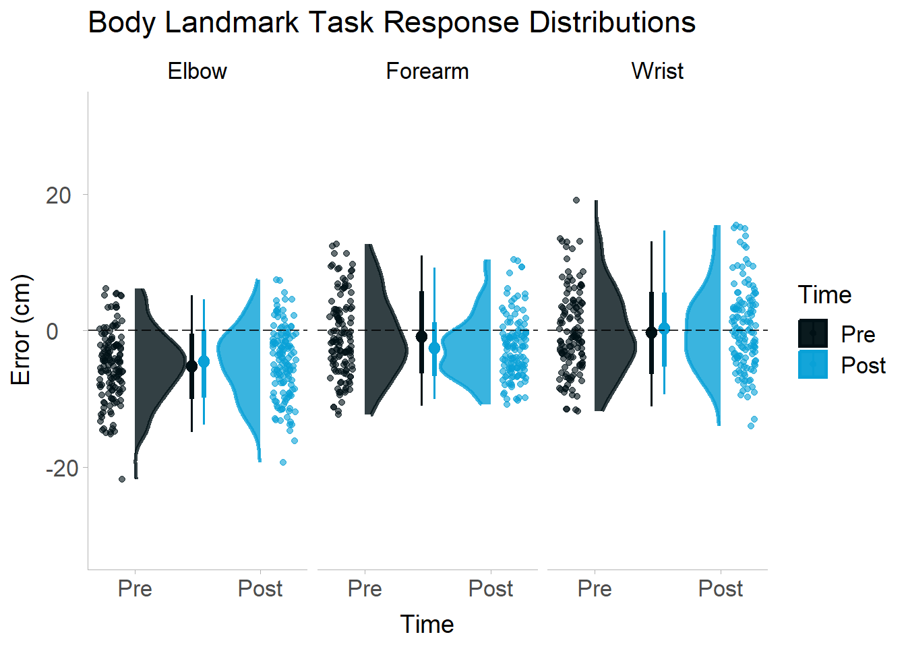
Reaching Task
Empirical Distributions
Overall
Intervals are 95% HDI, point estimates are the MAP.
# A raincloud plot for each of the kinematic peaks and latencies, using ggdist's stat_slab and stat_dotplot.
velocity_raincloud <- ppt_m %>%
raincloud_plot(vel_m_filt)
acceleration_raincloud <- ppt_m %>%
raincloud_plot(acc_m_filtfilt)
deceleration_raincloud <- ppt_m %>%
raincloud_plot(dec_m_filtfilt)
velocity_latency_raincloud <- ppt_m %>%
raincloud_plot(vel_lat_filt)
acceleration_latency_raincloud <- ppt_m %>%
raincloud_plot(acc_lat_filtfilt)
deceleration_latency_raincloud <- ppt_m %>%
raincloud_plot(dec_lat_filtfilt)Velocity
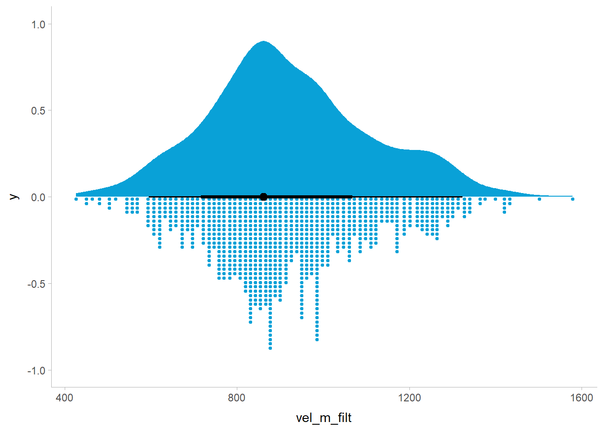
Acceleration
Warning: Removed 36 rows containing missing values (`stat_slabinterval()`).
Removed 36 rows containing missing values (`stat_slabinterval()`).
Removed 36 rows containing missing values (`stat_slabinterval()`).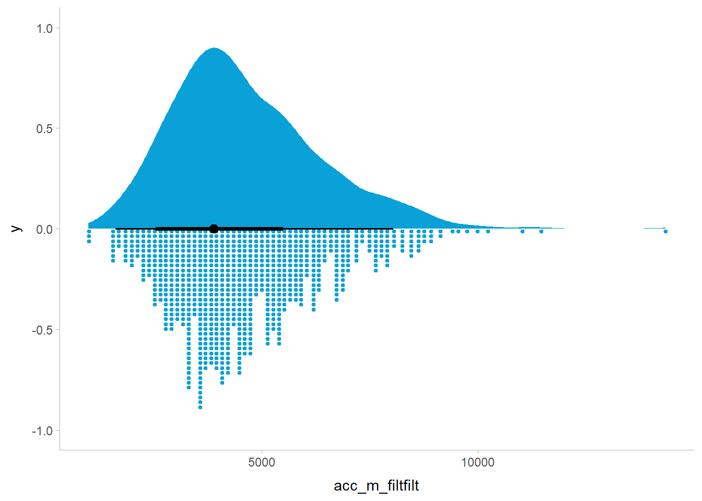
Deceleration
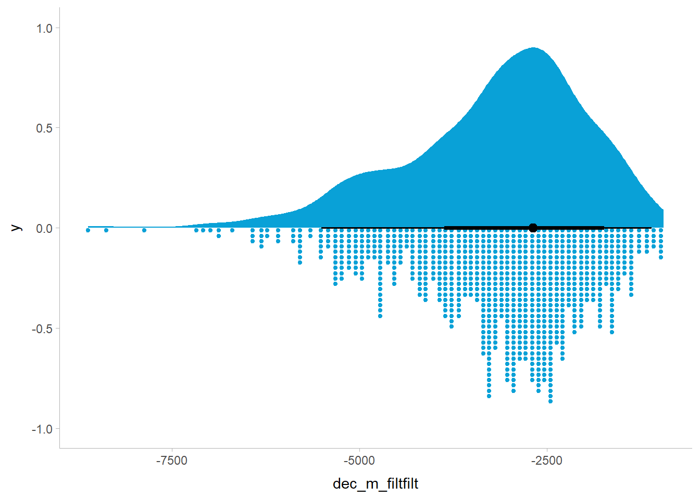
Latencies
Velocity
Warning: Removed 36 rows containing missing values (`stat_slabinterval()`).
Removed 36 rows containing missing values (`stat_slabinterval()`).
Removed 36 rows containing missing values (`stat_slabinterval()`).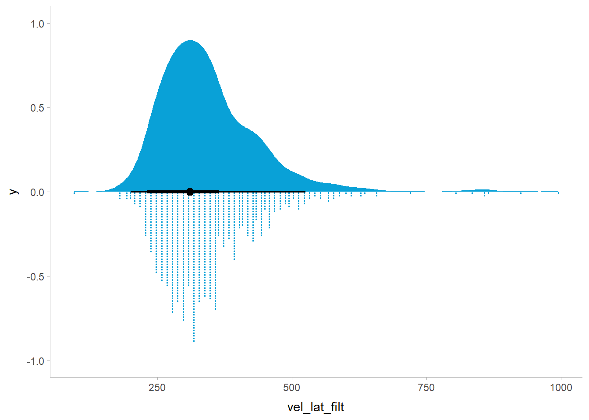
Acceleration
Warning: Removed 36 rows containing missing values (`stat_slabinterval()`).
Removed 36 rows containing missing values (`stat_slabinterval()`).
Removed 36 rows containing missing values (`stat_slabinterval()`).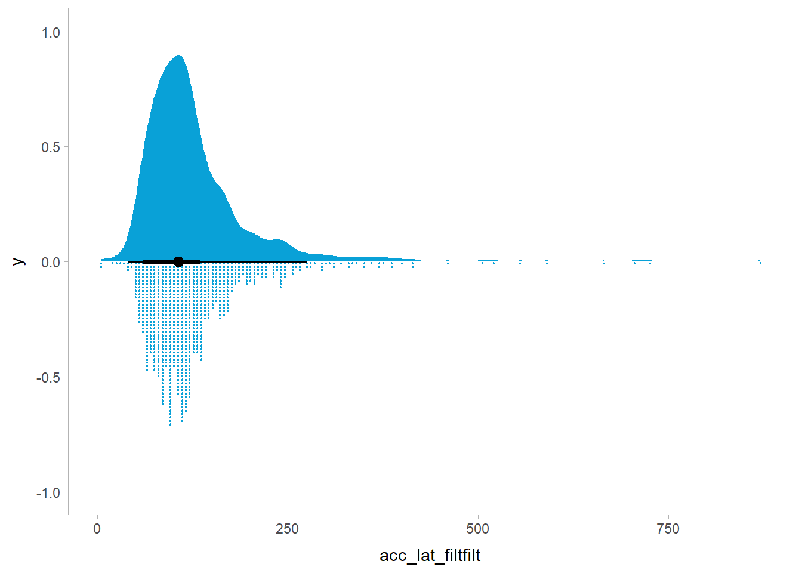
Deceleration
Warning: Removed 36 rows containing missing values (`stat_slabinterval()`).
Removed 36 rows containing missing values (`stat_slabinterval()`).
Removed 36 rows containing missing values (`stat_slabinterval()`).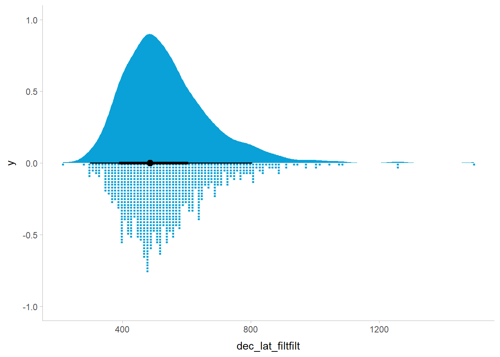
By Time
pptvel_dist <- ggplot(ppt_m,
aes(x = vel_m_filt,
fill = time,
color = time)) +
stat_dots(alpha = .7) +
stat_pointinterval(data = ppt_m[time == "Post"],
point_interval = mode_hdi, show_slab = FALSE,
position = position_nudge(y = -.043)) +
stat_pointinterval(data = ppt_m[time == "Pre"],
point_interval = mode_hdi,
show_slab = FALSE,
position = position_nudge(y = -.01)) +
labs(x = "Peak Velocity (mm/s)",
fill = "Time",
color = "Time",
y = NULL) +
scale_fill_manual(values = c("#001015", "#09A1D7")) +
scale_color_manual(values = c("#001015", "#09A1D7")) +
theme_tidybayes() +
theme(text = element_text(size = 14)) +
scale_y_continuous(limits = c(-.05, 1)) +
scale_x_continuous(
limits = c(0, 1500),
breaks = c(0, 500, 1000, 1500)
) +
theme(axis.line.y = element_blank(),
axis.ticks.y = element_blank(),
axis.text.y = element_blank(),
panel.background = element_rect(fill = "transparent", colour = NA),
legend.background = element_rect(fill = "transparent", colour = NA),
plot.background = element_rect(fill = "transparent", colour = NA))
pptacc_dist <- ggplot(ppt_m[!ppid %in% c("d1-001")],
aes(x = acc_m_filtfilt,
fill = time,
color = time)) +
stat_dots(alpha = .7) +
stat_pointinterval(data = ppt_m[!ppid %in% c("d1-001") & time == "Post"],
point_interval = mode_hdi,
show_slab = FALSE,
position = position_nudge(y = -.043)) +
stat_pointinterval(data = ppt_m[!ppid %in% c("d1-001") & time == "Pre"],
point_interval = mode_hdi,
show_slab = FALSE,
position = position_nudge(y = -.01) ) +
labs(x = expression("Peak Acceleration "(mm/s^2)),
fill = "Time",
color = "Time",
y = NULL) +
scale_fill_manual(values = c("#001015", "#09A1D7")) +
scale_color_manual(values = c("#001015", "#09A1D7")) +
theme_tidybayes() +
theme(text = element_text(size = 14)) +
scale_y_continuous(limits = c(-.05, 1)) +
scale_x_continuous(
limits = c(0, 15000),
breaks = c(0, 5000, 10000, 15000)
) +
theme(axis.line.y = element_blank(),
axis.ticks.y = element_blank(),
axis.text.y = element_blank(),
panel.background = element_rect(fill = "transparent", colour = NA),
legend.background = element_rect(fill = "transparent", colour = NA),
plot.background = element_rect(fill = "transparent", colour = NA))
pptdec_dist <- ggplot(ppt_m[!ppid %in% c("d1-001")],
aes(x = dec_m_filtfilt,
fill = time,
color = time)) +
stat_dots(alpha = .7) +
stat_pointinterval(data = ppt_m[!ppid %in% c("d1-001") & time == "Post"],
point_interval = mode_hdi,
show_slab = FALSE,
position = position_nudge(y = -.043)) +
stat_pointinterval(data = ppt_m[!ppid %in% c("d1-001") & time == "Pre"],
point_interval = mode_hdi,
show_slab = FALSE,
position = position_nudge(y = -.01)) +
labs(x = expression("Peak Deceleration "(mm/s^2)),
fill = "Time",
color = "Time",
y = NULL) +
scale_fill_manual(values = c("#001015", "#09A1D7")) +
scale_color_manual(values = c("#001015", "#09A1D7")) +
theme_tidybayes() +
theme(text = element_text(size = 14)) +
scale_x_continuous(
limits = c(-10000, 0),
breaks = c(-10000, -7500, -5000, -2500, 0)
) +
scale_y_continuous(limits = c(-.05, 1)) +
theme(axis.line.y = element_blank(),
axis.ticks.y = element_blank(),
axis.text.y = element_blank(),
panel.background = element_rect(fill = "transparent", colour = NA),
legend.background = element_rect(fill = "transparent", colour = NA),
plot.background = element_rect(fill = "transparent", colour = NA))
pptvel_lat_dist <- ggplot(ppt_m[!ppid %in% c("d1-001")],
aes(x = vel_lat_filt,
fill = time,
color = time)) +
stat_dots(alpha = .7) +
stat_pointinterval(data = ppt_m[!ppid %in% c("d1-001") & time == "Post"],
point_interval = mode_hdi, show_slab = FALSE,
position = position_nudge(y = -.043)) +
stat_pointinterval(data = ppt_m[!ppid %in% c("d1-001") & time == "Pre"],
point_interval = mode_hdi,
show_slab = FALSE,
position = position_nudge(y = -.01) ) +
labs(x = "Peak Velocity Latency (ms)",
fill = "Time",
color = "Time",
y = NULL) +
scale_fill_manual(values = c("#001015", "#09A1D7")) +
scale_color_manual(values = c("#001015", "#09A1D7")) +
theme_tidybayes() +
theme(text = element_text(size = 14)) +
scale_y_continuous(limits = c(-.05, 1)) +
scale_x_continuous(limits = c(0, 1000)) +
theme(axis.line.y = element_blank(),
axis.ticks.y = element_blank(),
axis.text.y = element_blank(),
panel.background = element_rect(fill = "transparent", colour = NA),
legend.background = element_rect(fill = "transparent", colour = NA),
plot.background = element_rect(fill = "transparent", colour = NA))
pptacc_lat_dist <- ggplot(
ppt_m[!ppid %in% c("d1-001")],
aes(
x = acc_lat_filtfilt,
fill = time,
color = time
)
) +
stat_dots(alpha = .7) +
stat_pointinterval(data = ppt_m[!ppid %in% c("d1-001") & time == "Post"],
point_interval = mode_hdi, show_slab = FALSE,
position = position_nudge(y = -.043)) +
stat_pointinterval(data = ppt_m[!ppid %in% c("d1-001") & time == "Pre"],
point_interval = mode_hdi,
show_slab = FALSE,
position = position_nudge(y = -.01) ) +
labs(x = "Peak Acceleration Latency (ms)",
fill = "Time",
color = "Time",
y = NULL) +
scale_fill_manual(values = c("#001015", "#09A1D7")) +
scale_color_manual(values = c("#001015", "#09A1D7")) +
theme_tidybayes() +
theme(text = element_text(size = 14)) +
scale_y_continuous(limits = c(-.05, 1)) +
scale_x_continuous(limits = c(0, 750)) +
theme(axis.line.y = element_blank(),
axis.ticks.y = element_blank(),
axis.text.y = element_blank(),
panel.background = element_rect(fill = "transparent", colour = NA),
legend.background = element_rect(fill = "transparent", colour = NA),
plot.background = element_rect(fill = "transparent", colour = NA))
pptdec_lat_dist <- ggplot(
ppt_m[!ppid %in% c("d1-001")],
aes(
x = dec_lat_filtfilt,
fill = time,
color = time
)
) +
stat_dots(alpha = .7) +
stat_pointinterval(data = ppt_m[!ppid %in% c("d1-001") & time == "Post"],
point_interval = mode_hdi, show_slab = FALSE,
position = position_nudge(y = -.043)) +
stat_pointinterval(data = ppt_m[!ppid %in% c("d1-001") & time == "Pre"],
point_interval = mode_hdi,
show_slab = FALSE,
position = position_nudge(y = -.01) )+
labs(x = "Peak Deceleration Latency (ms)",
fill = "Time",
color = "Time",
y = NULL) +
scale_fill_manual(values = c("#001015", "#09A1D7")) +
scale_color_manual(values = c("#001015", "#09A1D7")) +
theme_tidybayes() +
theme(text = element_text(size = 14)) +
scale_y_continuous(limits = c(-.05, 1)) +
scale_x_continuous(limits = c(0, 1500)) +
theme(axis.line.y = element_blank(),
axis.ticks.y = element_blank(),
axis.text.y = element_blank(),
panel.background = element_rect(fill = "transparent", colour = NA),
legend.background = element_rect(fill = "transparent", colour = NA),
plot.background = element_rect(fill = "transparent", colour = NA))
kinematic_empirical_plots <-
(
pptacc_dist + pptvel_dist + pptdec_dist +
pptacc_lat_dist + pptvel_lat_dist + pptdec_lat_dist
) + plot_layout(
guides = "collect",
nrow = 2,
ncol = 3
) + patchwork::plot_annotation(
title = "Kinematic peak and latency empirical distributions"
) & theme(
plot.title = element_text(size = 14),
panel.background = element_rect(fill = "transparent", colour = NA),
legend.background = element_rect(fill = "transparent", colour = NA),
plot.background = element_rect(fill = "transparent", colour = NA)
)
ggsave(kinematic_empirical_plots, filename = here::here("scripts", "for_osf", "tooluse_in_VR", "figures", "kinematics-empirical-plot.svg"), width = 18, height = 12, bg = "transparent")Warning: Removed 2 rows containing missing values (`stat_slabinterval()`).Warning: Removed 1 rows containing missing values (`stat_slabinterval()`).
Removed 1 rows containing missing values (`stat_slabinterval()`).
Removed 1 rows containing missing values (`stat_slabinterval()`).
Removed 1 rows containing missing values (`stat_slabinterval()`).saveRDS(kinematic_empirical_plots, here::here("scripts", "for_osf", "tooluse_in_VR", "figures", "kinematics-empirical-plot.rds"))
kinematic_empirical_plotsWarning: Removed 2 rows containing missing values (`stat_slabinterval()`).
Removed 1 rows containing missing values (`stat_slabinterval()`).
Removed 1 rows containing missing values (`stat_slabinterval()`).
Removed 1 rows containing missing values (`stat_slabinterval()`).
Removed 1 rows containing missing values (`stat_slabinterval()`).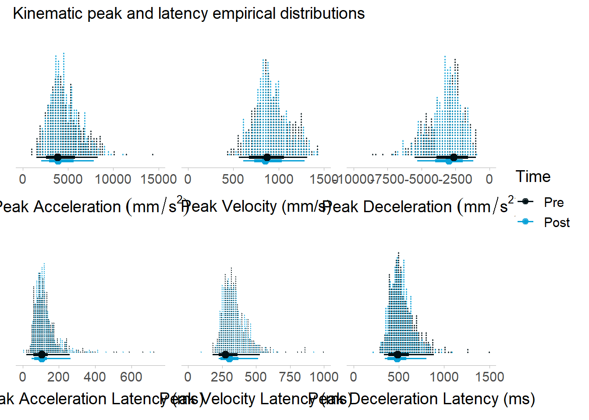
bind_rows(
ppt_m %>%
group_by(time) %>%
summarise(
acc = mean(acc_m_filtfilt),
vel = mean(vel_m_filt),
dec = mean(dec_m_filtfilt),
acc_lat = mean(acc_lat_filtfilt),
vel_lat = mean(vel_lat_filt),
dec_lat = mean(dec_lat_filtfilt)
),
ppt_m %>%
summarise(
acc = mean(acc_m_filtfilt),
vel = mean(vel_m_filt),
dec = mean(dec_m_filtfilt),
acc_lat = mean(acc_lat_filtfilt),
vel_lat = mean(vel_lat_filt),
dec_lat = mean(dec_lat_filtfilt)
) %>%
mutate(
time = "Overall"
)
) %>%
flextable::flextable()time | acc | vel | dec | acc_lat | vel_lat | dec_lat |
|---|---|---|---|---|---|---|
Pre | 923.6566 | -3,173.646 | ||||
Post | 920.3804 | -3,192.289 | ||||
Overall | 922.0185 | -3,182.968 |
By-participant Kinematic Changes
# Compute change scores by casting ppt_m to wide format and computing the difference between pre and post for each kinematic variable
change <- ppt_m %>%
pivot_wider(
id_cols = c(ppid, trial_num_in_block),
names_from = time,
values_from = c(
vel_m_filt,
acc_m_filtfilt,
dec_m_filtfilt,
vel_lat_filt,
acc_lat_filtfilt,
dec_lat_filtfilt
)
) %>%
group_by(ppid) %>%
dplyr::summarise(
vel_change = mean(vel_m_filt_Post) - mean(vel_m_filt_Pre),
acc_change = mean(acc_m_filtfilt_Post) - mean(acc_m_filtfilt_Pre),
dec_change = mean(dec_m_filtfilt_Post) - mean(dec_m_filtfilt_Pre),
vel_lat_change = mean(vel_lat_filt_Post) - mean(vel_lat_filt_Pre),
acc_lat_change = mean(acc_lat_filtfilt_Post) - mean(acc_lat_filtfilt_Pre),
dec_lat_change = mean(dec_lat_filtfilt_Post) - mean(dec_lat_filtfilt_Pre)
) %>% as.data.table()
change[order(vel_change)] ppid vel_change acc_change dec_change vel_lat_change acc_lat_change
1: d1-017 -245.516349 -2238.26132 1268.49302 25.555556 8.888889
2: d1-009 -210.373304 -1422.46404 1485.59861 -12.277778 -33.666667
3: d1-008 -197.131099 -1185.42158 1183.94421 80.888889 78.388889
4: d1-014 -88.923196 -939.12530 454.73520 18.611111 -4.166667
5: d1-024 -44.273846 407.90998 190.56673 -52.777778 -22.777778
6: d1-016 -18.115843 -412.83822 193.31851 35.277778 11.666667
7: d1-023 -17.966384 12.50300 -1184.56436 40.555556 27.222222
8: d1-001 -17.735438 NA -31.10834 NA NA
9: d1-002 -13.297855 160.32934 250.20896 -23.722222 5.166667
10: d1-005 -1.139108 -561.55908 -203.76743 20.555556 32.222222
11: d1-013 2.495247 -529.19571 -138.65141 22.500000 3.888889
12: d1-003 3.061271 42.90793 117.02125 62.298889 3.508333
13: d1-019 10.206264 -13.59957 -149.60136 -2.222222 -7.222222
14: d1-022 12.618251 -289.58109 -267.66173 23.333333 -3.888889
15: d1-011 20.128988 419.73151 22.62595 -30.000000 -11.944444
16: d1-021 22.368501 507.20492 -37.46038 -41.388889 36.991667
17: d1-012 27.358626 414.84022 -394.24074 -4.722222 -15.833333
18: d1-010 49.204071 359.05934 -221.43486 -37.500000 -38.055556
19: d1-018 51.207674 697.78482 -162.63833 -88.333333 -19.604444
20: d1-015 89.980888 1112.96515 -392.92857 -114.000000 -95.388889
21: d1-007 93.722875 984.71230 -440.03118 -15.833333 -40.555556
22: d1-006 108.069194 779.76051 -468.57776 -54.611111 -21.000000
23: d1-020 112.212895 850.51960 -753.77369 -115.666667 -27.333333
24: d1-004 173.208359 166.37824 -767.50192 17.500000 3.333333
ppid vel_change acc_change dec_change vel_lat_change acc_lat_change
dec_lat_change
1: 27.2222222
2: 37.1666667
3: 137.0000000
4: -0.5144444
5: -52.5000000
6: 23.0555556
7: 9.7222222
8: NA
9: -42.6111111
10: 14.7222222
11: 19.4444444
12: 10.7333333
13: -58.6111111
14: -5.8333333
15: -54.1666667
16: -98.7133333
17: -10.5555556
18: -95.5555556
19: -61.3888889
20: -222.8888889
21: -12.7777778
22: -38.5000000
23: -150.1111111
24: -105.8333333
dec_lat_change# Plot change scores
velocity_change <- change %>%
raincloud_plot(vel_change) +
geom_vline(xintercept = 0, linetype = "dashed")
acceleration_change <- change %>%
raincloud_plot(acc_change) +
geom_vline(xintercept = 0, linetype = "dashed")
deceleration_change <- change %>%
raincloud_plot(dec_change) +
geom_vline(xintercept = 0, linetype = "dashed")
velocity_lat_change <- change %>%
raincloud_plot(vel_lat_change) +
geom_vline(xintercept = 0, linetype = "dashed")
acceleration_lat_change <- change %>%
raincloud_plot(acc_lat_change) +
geom_vline(xintercept = 0, linetype = "dashed")
deceleration_lat_change <- change %>%
raincloud_plot(dec_lat_change) +
geom_vline(xintercept = 0, linetype = "dashed")Peaks
Velocity
velocity_change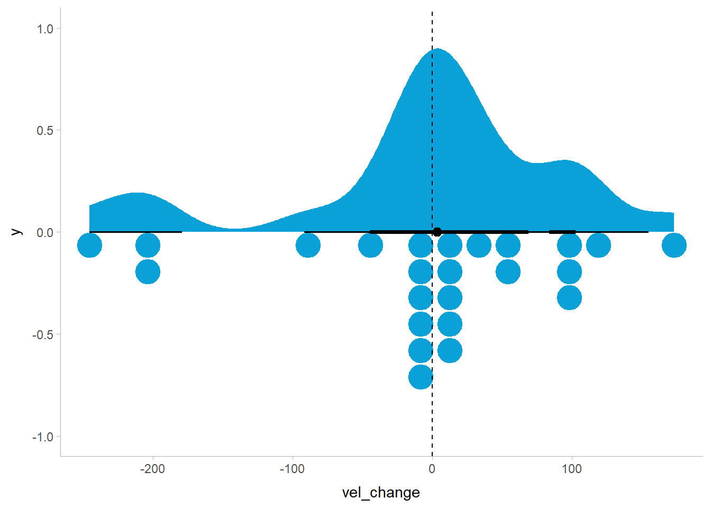
Acceleration
acceleration_changeWarning: Removed 1 rows containing missing values (`stat_slabinterval()`).
Removed 1 rows containing missing values (`stat_slabinterval()`).
Removed 1 rows containing missing values (`stat_slabinterval()`).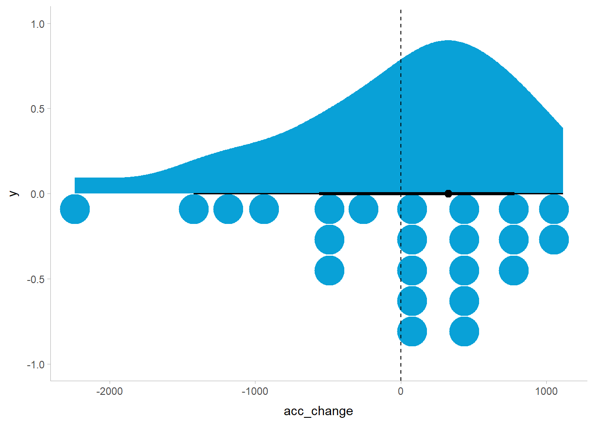
Deceleration
deceleration_change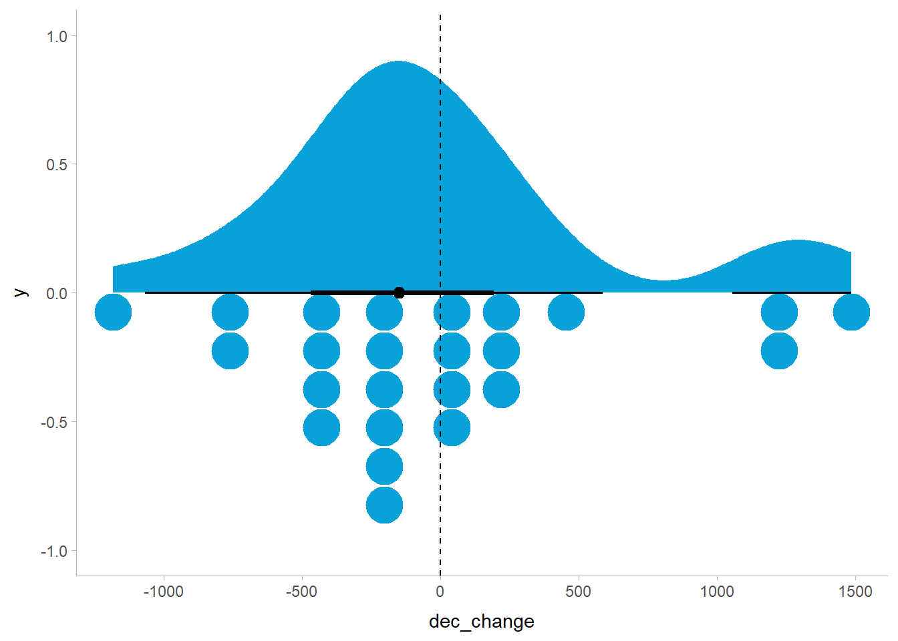
Latencies
Velocity
velocity_lat_changeWarning: Removed 1 rows containing missing values (`stat_slabinterval()`).
Removed 1 rows containing missing values (`stat_slabinterval()`).
Removed 1 rows containing missing values (`stat_slabinterval()`).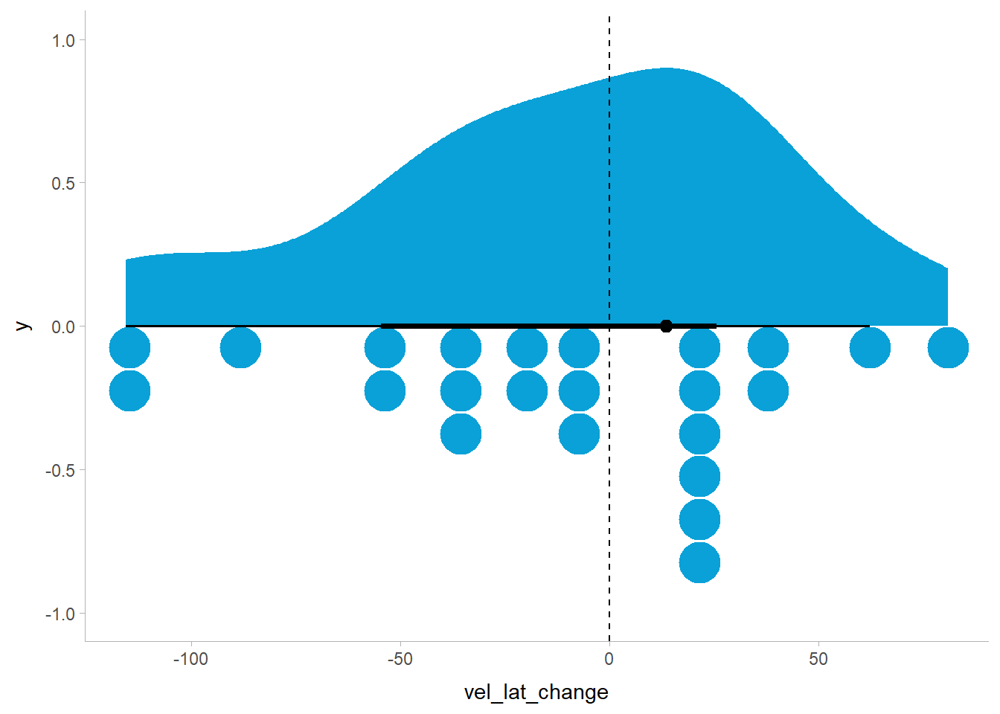
Acceleration
acceleration_lat_changeWarning: Removed 1 rows containing missing values (`stat_slabinterval()`).
Removed 1 rows containing missing values (`stat_slabinterval()`).
Removed 1 rows containing missing values (`stat_slabinterval()`).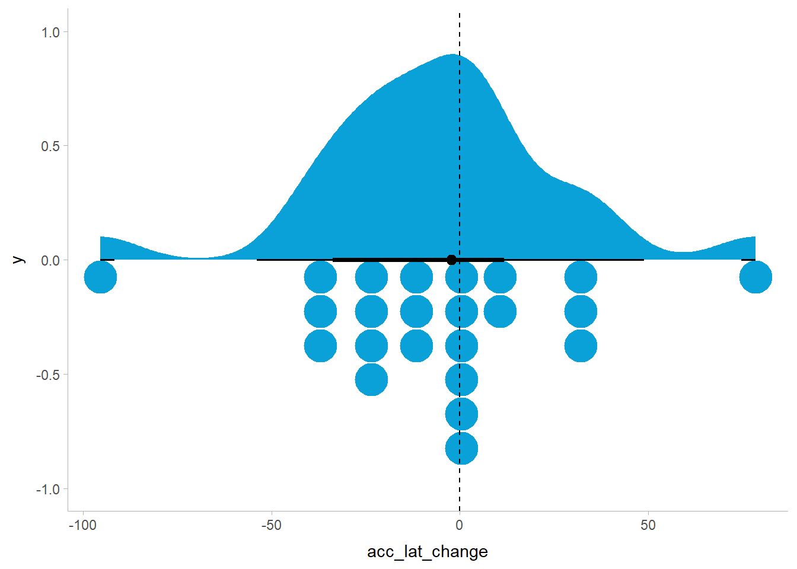
Deceleration
deceleration_lat_changeWarning: Removed 1 rows containing missing values (`stat_slabinterval()`).
Removed 1 rows containing missing values (`stat_slabinterval()`).
Removed 1 rows containing missing values (`stat_slabinterval()`).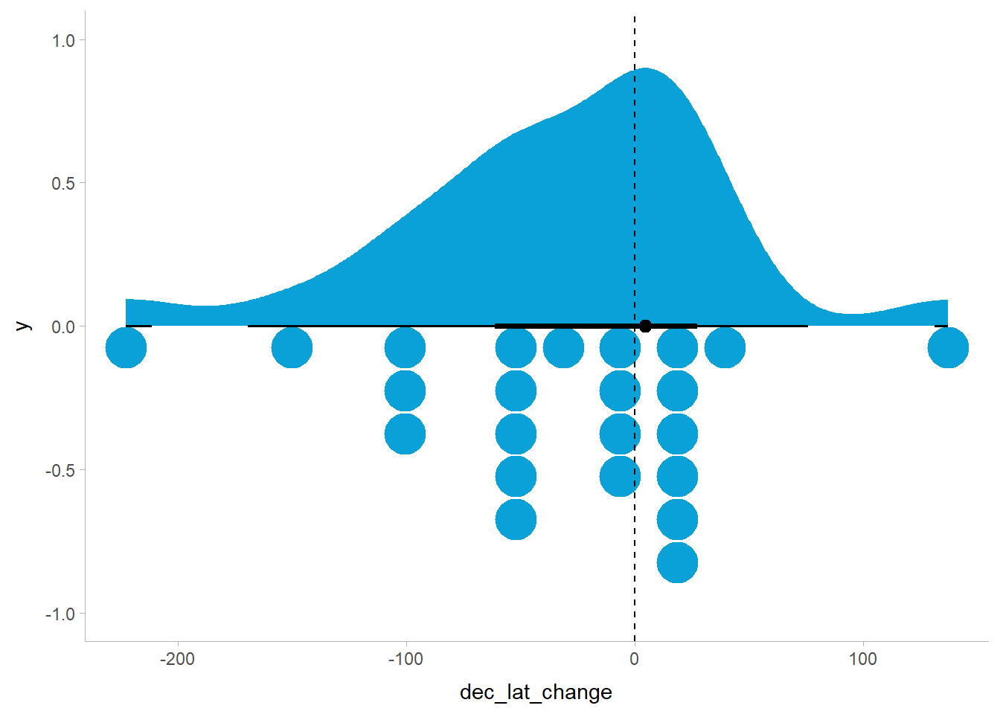
Session Info
sessioninfo::package_info() package * version date (UTC) lib source
abind 1.4-5 2016-07-21 [1] CRAN (R 4.2.0)
arrayhelpers 1.1-0 2020-02-04 [1] CRAN (R 4.2.0)
askpass 1.1 2019-01-13 [1] CRAN (R 4.2.0)
backports 1.4.1 2021-12-13 [1] CRAN (R 4.2.0)
bit 4.0.5 2022-11-15 [1] CRAN (R 4.2.2)
bit64 4.0.5 2020-08-30 [1] CRAN (R 4.2.0)
cachem 1.0.7 2023-02-24 [1] CRAN (R 4.2.2)
checkmate 2.1.0 2022-04-21 [1] CRAN (R 4.2.0)
cli 3.6.0 2023-01-09 [1] CRAN (R 4.2.2)
coda 0.19-4 2020-09-30 [1] CRAN (R 4.2.0)
colorspace 2.1-0 2023-01-23 [1] CRAN (R 4.2.2)
crayon 1.5.2 2022-09-29 [1] CRAN (R 4.2.1)
crul 1.3 2022-09-03 [1] CRAN (R 4.2.2)
curl 5.0.0 2023-01-12 [1] CRAN (R 4.2.2)
data.table * 1.14.8 2023-02-17 [1] CRAN (R 4.2.2)
datawizard * 0.6.5 2022-12-14 [1] CRAN (R 4.2.2)
digest 0.6.31 2022-12-11 [1] CRAN (R 4.2.2)
distributional 0.3.1 2022-09-02 [1] CRAN (R 4.2.1)
dplyr * 1.1.0 2023-01-29 [1] CRAN (R 4.2.2)
ellipsis 0.3.2 2021-04-29 [1] CRAN (R 4.2.0)
equatags 0.2.0 2022-06-13 [1] CRAN (R 4.2.2)
evaluate 0.20 2023-01-17 [1] CRAN (R 4.2.2)
fansi 1.0.4 2023-01-22 [1] CRAN (R 4.2.2)
farver 2.1.1 2022-07-06 [1] CRAN (R 4.2.1)
fastmap 1.1.1 2023-02-24 [1] CRAN (R 4.2.2)
flextable * 0.8.6 2023-02-23 [1] CRAN (R 4.2.2)
fontBitstreamVera 0.1.1 2017-02-01 [1] CRAN (R 4.2.0)
fontLiberation 0.1.0 2016-10-15 [1] CRAN (R 4.2.0)
fontquiver 0.2.1 2017-02-01 [1] CRAN (R 4.2.2)
gdtools 0.3.1 2023-02-17 [1] CRAN (R 4.2.2)
generics 0.1.3 2022-07-05 [1] CRAN (R 4.2.1)
gfonts 0.2.0 2023-01-08 [1] CRAN (R 4.2.2)
ggdist 3.2.1 2023-01-18 [1] CRAN (R 4.2.2)
gghalves * 0.1.4 2022-11-20 [1] CRAN (R 4.2.2)
ggplot2 * 3.4.1 2023-02-10 [1] CRAN (R 4.2.2)
ggthemes * 4.2.4 2021-01-20 [1] CRAN (R 4.2.0)
glue 1.6.2 2022-02-24 [1] CRAN (R 4.2.0)
gtable 0.3.1 2022-09-01 [1] CRAN (R 4.2.1)
HDInterval 0.2.4 2022-11-17 [1] CRAN (R 4.2.2)
here * 1.0.1 2020-12-13 [1] CRAN (R 4.2.0)
hms 1.1.2 2022-08-19 [1] CRAN (R 4.2.1)
htmltools 0.5.4 2022-12-07 [1] CRAN (R 4.2.2)
htmlwidgets 1.6.1 2023-01-07 [1] CRAN (R 4.2.2)
httpcode 0.3.0 2020-04-10 [1] CRAN (R 4.2.2)
httpuv 1.6.9 2023-02-14 [1] CRAN (R 4.2.2)
insight 0.19.0 2023-01-30 [1] CRAN (R 4.2.2)
jsonlite 1.8.4 2022-12-06 [1] CRAN (R 4.2.2)
katex 1.4.1 2022-11-28 [1] CRAN (R 4.2.2)
knitr 1.42 2023-01-25 [1] CRAN (R 4.2.2)
labeling 0.4.2 2020-10-20 [1] CRAN (R 4.2.0)
later 1.3.0 2021-08-18 [1] CRAN (R 4.2.0)
lattice 0.20-45 2021-09-22 [2] CRAN (R 4.2.1)
lifecycle 1.0.3 2022-10-07 [1] CRAN (R 4.2.1)
magrittr * 2.0.3 2022-03-30 [1] CRAN (R 4.2.0)
memoise 2.0.1 2021-11-26 [1] CRAN (R 4.2.1)
mime 0.12 2021-09-28 [1] CRAN (R 4.2.0)
munsell 0.5.0 2018-06-12 [1] CRAN (R 4.2.0)
officer 0.6.0 2023-02-17 [1] CRAN (R 4.2.2)
openssl 2.0.5 2022-12-06 [1] CRAN (R 4.2.2)
patchwork * 1.1.2 2022-08-19 [1] CRAN (R 4.2.1)
pillar 1.8.1 2022-08-19 [1] CRAN (R 4.2.1)
pkgconfig 2.0.3 2019-09-22 [1] CRAN (R 4.2.0)
posterior 1.4.0 2023-02-22 [1] CRAN (R 4.2.2)
promises 1.2.0.1 2021-02-11 [1] CRAN (R 4.2.0)
purrr 1.0.1 2023-01-10 [1] CRAN (R 4.2.2)
quadprog 1.5-8 2019-11-20 [1] CRAN (R 4.2.0)
R6 2.5.1 2021-08-19 [1] CRAN (R 4.2.0)
ragg 1.2.5 2023-01-12 [1] CRAN (R 4.2.2)
Rcpp 1.0.10 2023-01-22 [1] CRAN (R 4.2.2)
readr * 2.1.4 2023-02-10 [1] CRAN (R 4.2.2)
rlang 1.0.6 2022-09-24 [1] CRAN (R 4.2.1)
rmarkdown 2.20 2023-01-19 [1] CRAN (R 4.2.2)
rprojroot 2.0.3 2022-04-02 [1] CRAN (R 4.2.0)
scales 1.2.1 2022-08-20 [1] CRAN (R 4.2.1)
sessioninfo 1.2.2 2021-12-06 [1] CRAN (R 4.2.1)
shiny 1.7.4 2022-12-15 [1] CRAN (R 4.2.2)
stringi 1.7.12 2023-01-11 [1] CRAN (R 4.2.2)
stringr 1.5.0 2022-12-02 [1] CRAN (R 4.2.2)
svglite 2.1.1 2023-01-10 [1] CRAN (R 4.2.2)
svUnit 1.0.6 2021-04-19 [1] CRAN (R 4.2.0)
systemfonts 1.0.4 2022-02-11 [1] CRAN (R 4.2.0)
tensorA 0.36.2 2020-11-19 [1] CRAN (R 4.2.0)
textshaping 0.3.6 2021-10-13 [1] CRAN (R 4.2.2)
tibble 3.1.8 2022-07-22 [1] CRAN (R 4.2.1)
tidybayes * 3.0.3 2023-02-04 [1] CRAN (R 4.2.2)
tidyr * 1.3.0 2023-01-24 [1] CRAN (R 4.2.2)
tidyselect 1.2.0 2022-10-10 [1] CRAN (R 4.2.1)
tzdb 0.3.0 2022-03-28 [1] CRAN (R 4.2.0)
utf8 1.2.3 2023-01-31 [1] CRAN (R 4.2.2)
uuid 1.1-0 2022-04-19 [1] CRAN (R 4.2.0)
V8 4.2.2 2022-11-03 [1] CRAN (R 4.2.1)
vctrs 0.5.2 2023-01-23 [1] CRAN (R 4.2.2)
vroom 1.6.1 2023-01-22 [1] CRAN (R 4.2.2)
withr 2.5.0 2022-03-03 [1] CRAN (R 4.2.0)
xfun 0.37 2023-01-31 [1] CRAN (R 4.2.2)
xml2 1.3.3 2021-11-30 [1] CRAN (R 4.2.0)
xslt 1.4.4 2023-02-21 [1] CRAN (R 4.2.2)
xtable 1.8-4 2019-04-21 [1] CRAN (R 4.2.0)
yaml 2.3.7 2023-01-23 [1] CRAN (R 4.2.2)
zip 2.2.2 2022-10-26 [1] CRAN (R 4.2.2)
[1] C:/Users/Joshu/AppData/Local/R/win-library/4.2
[2] C:/Program Files/R/R-4.2.1/library